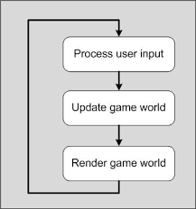
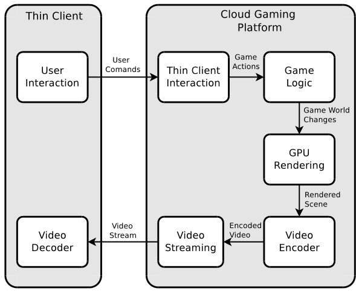
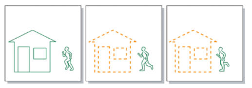
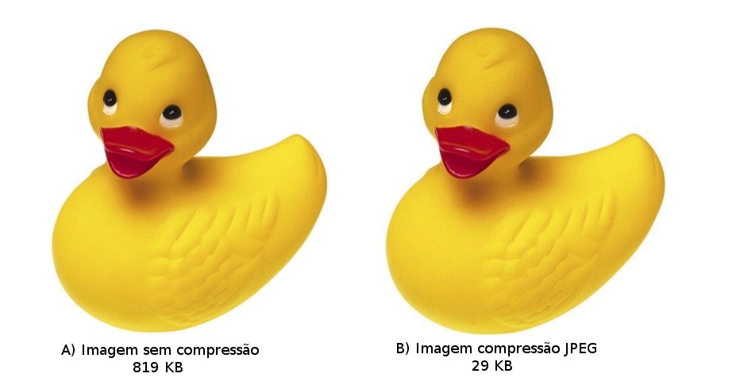
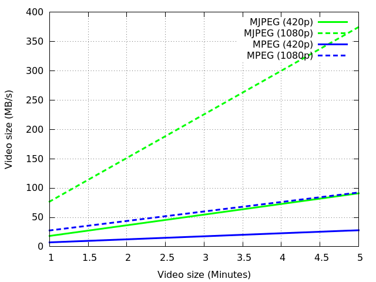

Índice
- Introdução
- Jogos sob demanda
- Compressão de dados
- MJPEG
- MPEG
- Resultados
- Conclusão
- Referências
Introdução
Jogos sob demanda
Game Loop
Divisão do jogo

Funcionamento mais detalhado
Compressão de dados
- Lossy
- Lossless ou Loss-free
MJPEG
- Motion JPEG
- JPEGs em sequencia
- Processo simples
MPEG
- Moving Picture Experts Group
- Comparação entre frames
- Processo complexo
MPEG
Resultados
Qualidade MJPEG
Qualidade MPEG

Compressão
Conclusão
Referências
Djaouti, D., Alvarez, J., Jessel, J.-P., Methel, G., and Molinier, P. (2008). A gameplay definition through videogame classification. International Journal of Computer Games Technology, 2008:4.
HUANG, C.-Y. et al. Gaminganywhere: An open cloud gaming system. ACM Multimedia Systems,2013.
Shea, Ryan, et al. "Cloud gaming: architecture and performance." Network, IEEE 27.4 (2013).
Communications, A. (2008). An explanation of video compression techniques.
https://www.youtube.com/watch?v=Q0oIoR9mLwc
http://caputconsultoria.com.br/artigos81-a-sindrome-do-pato/